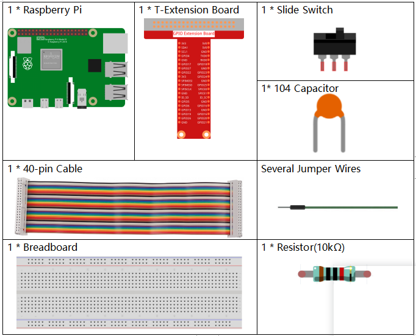
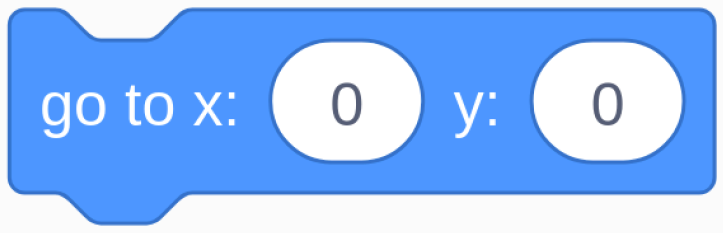

1.9 Inflating the Balloon¶
Here, we will play a game of ballooning.
By toggling Slide to the left to start to inflate the balloon, at this time the balloon will get bigger and bigger. If the balloon is too large will blow up; if the balloon is too small, it will not float into the air. You need to judge when to toggle the switch to the right to stop pumping.

Required Components¶
Build the Circuit¶

Load the Code and See What Happens¶
Load the code file (1.9_inflating_the_balloon.sb3) to Scratch 3.
By toggling Slider to the left to start to inflate the balloon, at this time the balloon will get bigger and bigger. If the balloon is too large will blow up; if the balloon is too small, it will not float into the air. You need to judge when to toggle the switch to the right to stop pumping.
Tips on Sprite¶
Delete the previous Sprite1 sprite, then add the Balloon1 sprite.

A balloon explosion sound effect is used in this project, so let’s see how it was added.
Click the Sound option at the top, then click Upload Sound to upload boom.wav from the home/pi/davinci-kit-for-raspberry-pi/scratch/sound path to Scratch 3.
Tips on Codes¶

This is an event block, and the trigger condition is that gpio17 is high, that is, the switch is toggled to the left.

Set the size threshold of the Ballon1 sprite to 120
{kind=link}
Move the coordinates of the Balloon1 sprite to (0,0), which is the center of the stage area.

Set the size of the Balloon1 sprite to 50 and show it in the stage area.

Set up a loop to inflate the balloon, this loop stops when the slider switch is toggled to the right.
Within this loop, the balloon size is increased by 1 every 0.1s, and if it is larger than maxSize, the balloon will burst, at which point the boom sound is made and the code is exited.

After the last loop exits (Slider toggles to the right), determine the position of the Balloon1 sprite based on its size. If the size of the Balloon1 sprite is greater than 90, lift off (move the coordinates to (0, 90), otherwise land (move the coordinates to (0, -149).